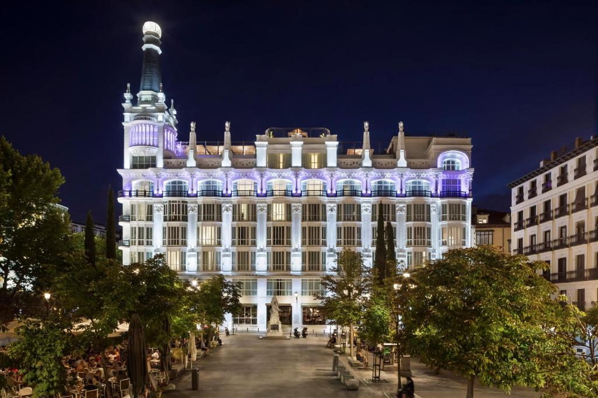

|
|
Hoteles de Madrid. |
|
El Westin Palace ofrece elegantes instalaciones a sólo 300 metros del Museo del Prado, del Thyssen y del Reina Sofía. En el Palace Bar se sirven cócteles, cafés y aperitivos, bajo la cúpula. Con música en directo, el bar se hizo famoso gracias a la novela The Sun Also Rises, de Ernest Hemingway. Nuestros clientes dicen que esta parte de Madrid es su favorita. Centro fitness y parking privado. Habitaciones sin humo. |
Valoración 9 Recepción 24h ✓ |
|
|  |
Madrid Reina Victoria by Meliá El hotel se encuentra a 300 metros de la Puerta del Sol. y a poca distancia a pie de la estación de metro Sevilla. Terraza y balcón. Hay conexión WiFi gratuita disponible. Las habitaciones también tienen iluminación regulable y control de temperatura. El baño privado tiene altavoces de TV. El servicio de habitaciones está disponible las 24 horas. Todas las plantas del hotel cuentan con dispensador de hielo |
Valoración 7,9 Servicios limpieza a diario ✓ |
|
El Hotel Ópera ocupa un edificio reformado del siglo XIX, ubicado en una de las zonas más prestigiosas de la ciudad, a poca distancia a pie de algunos de los lugares más populares de Madrid. La plaza Mayor, la Puerta del Sol y la Gran Vía están a 20 minutos a pie. Es un punto de partida ideal para recorrer la capital española. Terraza |
Valoración 8,2 WiFi gratis ✓ |